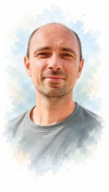

 Первый раз я побывал на Браславских озёрах летом 2010 года.
С тех пор я так полюбил эти волшебные места, что теперь каждый
год бываю там. С высоты старого Городища можно полностью осознать
и прочувствовать всю точность словосочетания
"Синеокая Беларусь".
Первый раз я побывал на Браславских озёрах летом 2010 года.
С тех пор я так полюбил эти волшебные места, что теперь каждый
год бываю там. С высоты старого Городища можно полностью осознать
и прочувствовать всю точность словосочетания
"Синеокая Беларусь".
Что может сделать отдых увлекательным и эмоциональным? Конечно, автопутешествие с фотоотчётами! О своих экскурсиях я решил отчитываться фотографиями на сайте. Дело решённое: получил водительские права, купил недорогое авто и вперёд!
Маршрут первого путешествия проложил по самым красивым местам Беларуси - северо-западному краю. На моём пути - выдающиеся образцы храмового зодчества XVI - XX века. Старинные церкви, великолепные, возносящиеся в небо, костелы, монастыри с многовековой суровой историей. Видзы, Опса, Браслав, Слободка, Друя, Иказнь.
Сказочная природа Браславщины никого не оставит равнодушным, а встреча закатов и рассветов на озере Снуды придаст романтическое очарование этой поездке.
Привлекательность Браславских озер в том, что каждое из них особенное и имеет исключительные черты. К примеру, на озере Струсто находится 2-ой по величине остров Беларуси – Чайчин, который, к тому же, обзавелся своим собственным внутренним озерцом. А Волосо Южный – самое глубокое озеро, его глубина более 40 метров. И славится эта синяя жемчужина своей чистотой. Прозрачность воды здесь – 8 метров.
Красота Браславских озер – вне конкуренции. Это подтверждается первым местом в рейтинге лучших мест для отдыха в Беларуси и тысячами туристов, ежегодно посещающих эти места.
Каждый год - по новому автопутешествию по Беларуси! Вот и на 2013 год запланировал поездку на Сорочанские озёра. 14 великолепных озер и водоемов называют жемчужным ожерельем Островетчины. Здесь есть одно необычное место, которое называют водоразделом между Сорочанскими и Голубыми озерами. С высоты этой гряды открывается удивительный вид: с одной стороны страна Голубых озер, с другой – Сорочанских.